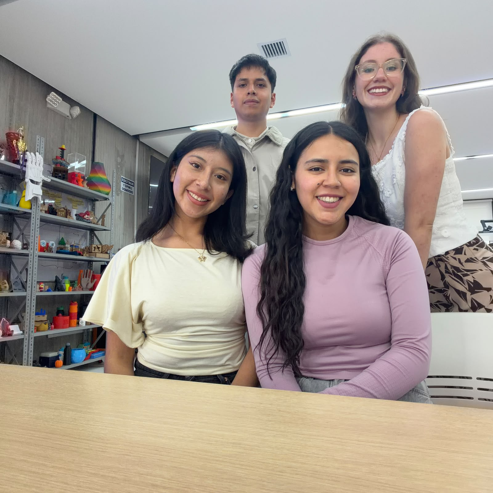
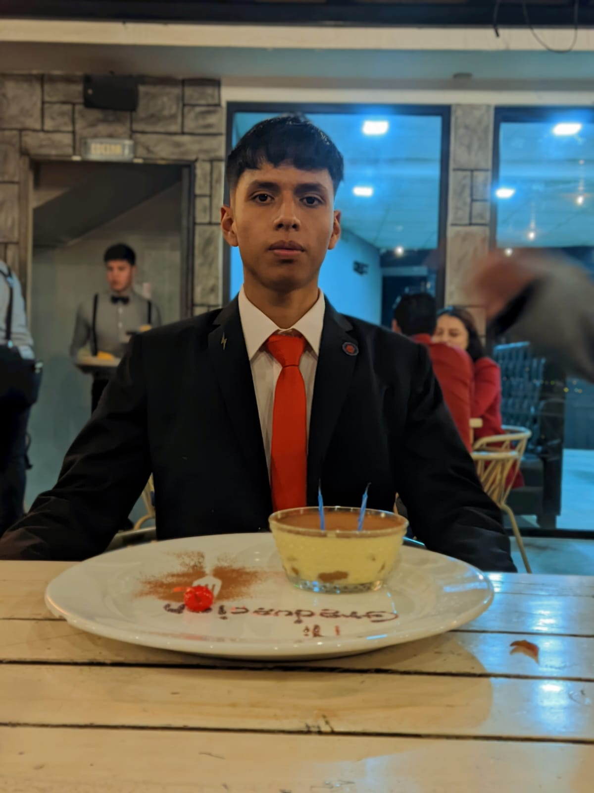
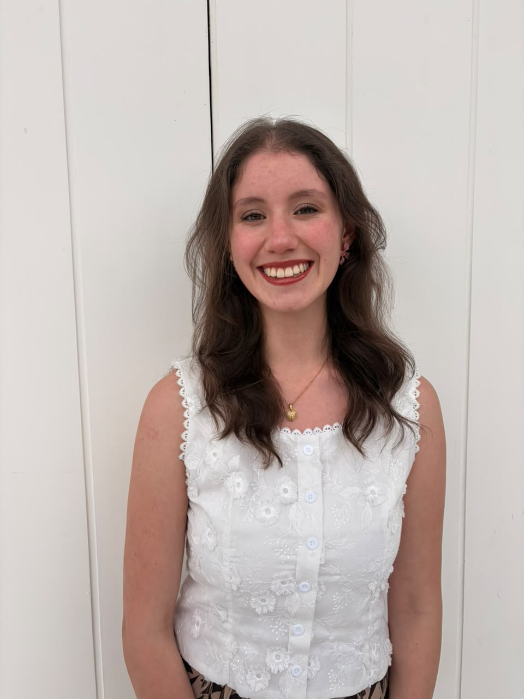
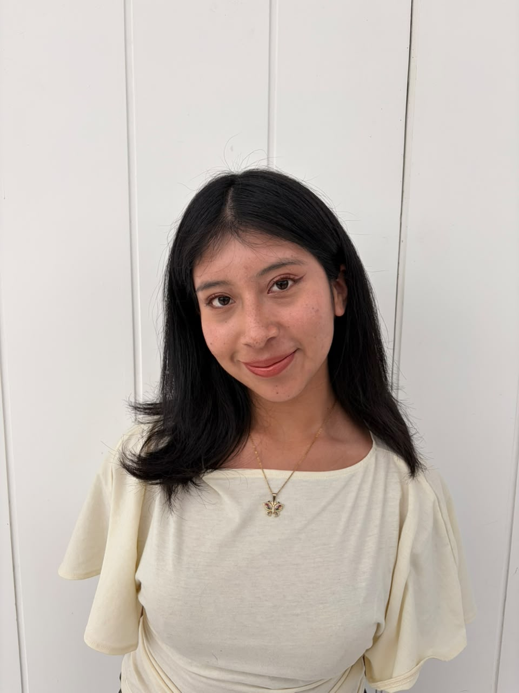
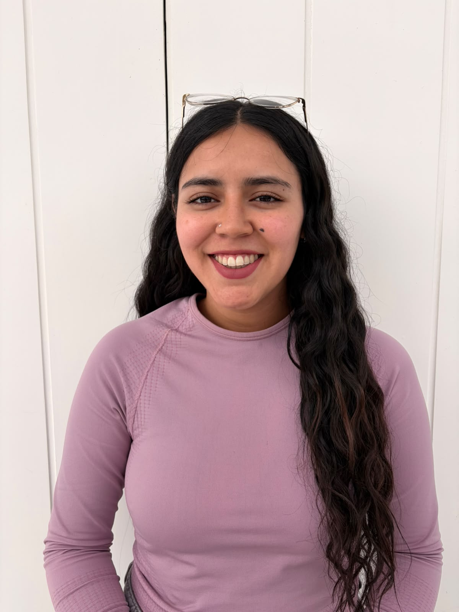

Weekly Assignments
Engineering and fabrication logs for the smart corrective clubfoot orthosis
Project Management & Clinical Research
Problem formulation in Ecuador, design timeline, clinical benchmarking, and biomedical component selection.
Computer Aided Design (CAD)
3D modeling of anatomical footplates for hindfoot and forefoot support using biocompatible thermoplastics (PETG / TPU).
Digital Fabrication & Cutting
Fabrication of custom synthetic leather straps via CO2 laser cutting and additive manufacturing of the structural orthotic frame.
Embedded Programming & Sensors
ESP32 microcontroller firmware for therapeutic compliance telemetry, heel lift detection, and Bluetooth syncing.
Epidemiological Analysis: Clubfoot (ICD-10: Q66)
Official statistical data extracted from the National Hospital Discharges Registry (INEC Ecuador)
481
Congenital foot deformities recorded nationwide63.4%
Coast Region (305 hospital discharges)191
Guayas (39.7% of all national discharges)#2 Nat.
Surpassed only by congenital hip dysplasia (Q65: 486)Top 10 Provinces by Hospital Discharges
Distribution by patient's province of residence (ICD-10 Q66)
Distribution by Natural Geographic Region
Geographic concentration of orthopedic clinical demand
Comparison: Congenital Musculoskeletal Malformations
Total volume across the 5 primary musculoskeletal congenital pathologies
Biomedical Justification & Digital Fabrication
National hospital registries confirm that congenital clubfoot (ICD-10: Q66) represents one of the most prevalent conditions requiring early orthopedic correction. The gold standard (Ponseti Method) demands prolonged and strict brace adherence over multiple years to prevent relapse; however, the lack of objective monitoring and the high cost of imported devices trigger elevated abandonment rates. This project delivers an affordable, digitally fabricated smart orthosis equipped with embedded sensors to record and verify real daily usage.
Final Project: Smart Ponseti Clubfoot Brace
Active and monitored orthotic device for clubfoot correction and post-tenotomy rehabilitation
Smart Orthopedic Device for Pediatric Clubfoot Correction
A parametric open-source solution combining medical-grade additive manufacturing, a dynamic crossbar with indexed angular adjustment (60° abduction / 15° dorsiflexion), and an IoT module for objective nighttime adherence tracking.
Biomechanics & Ergonomics
PETG structural boots with antibacterial flexible TPU inner linings, engineered to prevent pressure ulcers while securing full heel contact in the back of the shell.
Adjustable Dynamic Mechanism
CNC-machined dynamic crossbar enabling controlled external rotation from 0° to 70° alongside adjustable width corresponding to the infant's shoulder span.
Embedded Electronics & Telemetry
Piezoresistive force sensor array and an ESP32 BLE SoC syncing real daily wearing hours with a dedicated clinician monitoring dashboard.
KURIMANYA KIDS
Reinventing pediatric orthopedics in Ecuador with local, accessible, and intelligent technology.

Industrial Engineering & Biomechanics
Democratizing access to healthcare technology from Southern Ecuador
We are a team of 4 students in the 6th cycle of Industrial Engineering at the Universidad de Cuenca. We combine digital fabrication, user-centered design, and cost engineering to solve real-world clinical challenges in our country, expanding access to healthcare technologies directly from FabLab Cuenca.
The Problem
Pediatric clubfoot requires continuous orthosis wear (AFO / abduction bars) to guide gait and gently stretch the Achilles tendon. However, families in Ecuador face three critical barriers:
Unsustainable Costs
Imported orthoses cost between $250 and $400 USD per unit, making them unaffordable for most families reliant on the public healthcare network.
Accelerated Growth
An infant changes shoe sizes every 6 months, forcing families to repeatedly discard and purchase entire devices over several years.
Lack of Data & Motivation
Standard braces cause discomfort, do not measure actual daily compliance, and lack interactive stimuli to ensure proper heel placement.
Our Solution: Kurimanya Kids
An intelligent, modular, open-source orthotic ecosystem designed for low-cost digital manufacturing in local Fab Labs (FDM 3D printing in PETG/TPU, laser cutting, and embedded microelectronics).
Adjustable Mechanical Hinge
Allows the physical therapist to progressively adjust dorsiflexion angles on the same chassis, accompanying the child's physical rehabilitation curve.
Interactive Visual Biofeedback
Plantar pressure sensors trigger subtle LED lights when the heel makes full contact, turning therapy and crawling into an engaging, gamified experience.
Modular Growth Reusability
When sizing changes, electronic modules and hinges are unclipped and reassembled into a newly printed shell for only ~$8 – $12 USD.
Digital Gait Telemetry
Transmits real-time pressure maps, symmetry ratios, and wear duration to a clinician dashboard for reliable clinical decision-making.
Project Team Members
Industrial Engineering Undergraduates • Universidad de Cuenca

DMDanny Muñoz
Project Lead & Digital Fabrication
Parametric CAD modeling, public health data analytics, and rapid prototyping workflows at FabLab Cuenca.

SLSimoné López
Embedded Electronics & Sensors
Integration of plantar pressure sensor arrays, signal conditioning, and interactive visual biofeedback circuitry.

SVSamantha Vásquez
Biomechanics & Ergonomics
Ergonomic orthotic shell design, mechanical hinge optimization, and technical polymer benchmarking (PETG/TPU).

PJPamela Jaramillo
Cost Optimization & Telemetry
Product life-cycle costing, modular component replacement models, and clinician mobile app integration.